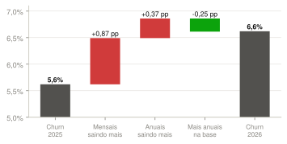
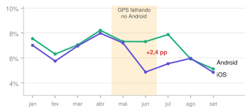
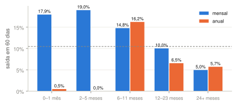
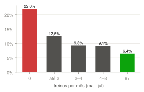
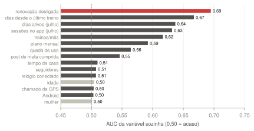
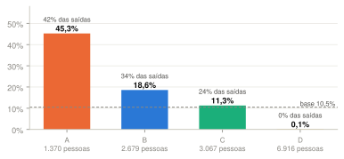
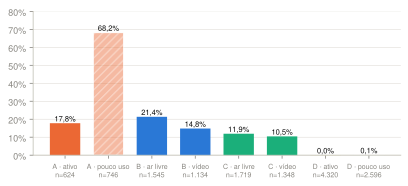
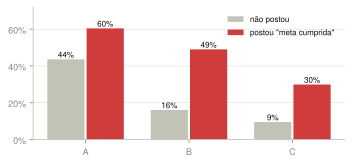
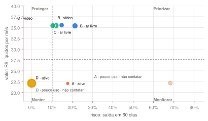
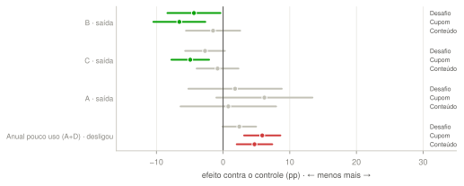

Versão unificada dos três trabalhos do grupo. Base: 14.032 assinantes pagantes ativos no fim de 31/07/2026 e quem saiu até 29/09/2026.
O churn mensal subiu de 5,6% (2025) para 6,6% (2026). Quase toda a alta veio do plano mensal, depois do reajuste de março e de uma falha de GPS no Android. Quem sai se explica pelo momento do ciclo (plano, tempo de casa, data da renovação) e pelo uso, não por idade ou sexo.
Prioridade preliminar: agir já no B e no A ativo; agir no C quando um gatilho aparece (queda de uso, "meta cumprida", cobrança recusada). Não contatar o anual com pouco uso (A e D): no sorteio de agosto, qualquer mensagem aumentou o desligamento da renovação nesse grupo.
População: assinaturas pagas ativas no fim de 31/07/2026, sem as 60 contas internas. Rótulo: a assinatura terminou nos 60 dias seguintes, o mesmo horizonte do modelo da semana 10. Toda variável usa só informação até 31/07, para não haver vazamento.
Limpeza: datas das lojas convertidas de UTC para Brasília (68% dos eventos); 1.941 cobranças duplicadas removidas; grafias de sexo, sistema e cidade padronizadas; valores em dois formatos convertidos; tipos de treino em inglês traduzidos.
| Conferência com o enunciado | Enunciado | Reconstruído |
|---|---|---|
| Ativos em 30/09/2026 | 14.753 | 14.753 |
| Ativos no início de jan/2025 | 8.540 | 8.540 |
| Abril/2026: perdas · churn | 1.154 · 8,1% | 1.154 · 8,1% |
| Ativos no início de set/2026 | 14.319 | 14.319 |
| Churn médio 2025 · jan–set/2026 | 5,6% · 6,6% | 5,6% · 6,6% |


Comparando o mensal (que teve reajuste em 01/03) com o anual (que não teve), a diferença em diferenças atribui +4,7 pp por mês ao preço entre março e maio; o mensal chegou a 14,5% em abril. A alta não é só preço: janeiro/2026 já era alto, e o anual sobe desde jul/2025, quando a grande safra de anuais de 2024 começou a chegar à renovação.



| Hipótese | Resultado | Veredito |
|---|---|---|
| Mensal sai mais que anual | 14,7% × 7,5%; mensal é 41% da base e 57,5% das saídas | sobreviveu |
| Pouco tempo de casa sai mais | mensal até 5 meses: 18–19%; no anual o risco é a renovação | no mensal |
| Uso baixo e queda de uso antecedem a saída | 0 treino 22,0%; queda em julho 17,3% × 9,0% | sobreviveu |
| Renovação desligada é o sinal mais forte | 32,3% × 6,1%; 52% das saídas; AUC 0,69 | priorizar |
| "Meta cumprida" antecede a saída | post nos últimos 60 dias: 19,5% × 9,5% | sobreviveu |
| Reajuste explica a subida de 2026 | +4,7 pp/mês no mensal; mas jan/26 e o anual também sobem | em parte |
| Pagar no site (cartão) sai mais | 11,9% × 9,7–10,4% | fraca |
| Idade e sexo separam quem sai | AUC 0,50; mediana de 46–47 anos em todos os segmentos | caiu |
Cruzamento aponta suspeitos, não prova causa. Idade e sexo também não seriam gatilho de ação (LGPD, art. 6º, IX); por decisão do grupo, ficam fora do modelo.
O k-means em variáveis de comportamento agrupa bem quem usa muito ou pouco, mas não enxerga quando o anual pode sair (silhueta 0,18–0,23; os grupos são faixas, não ilhas). Regras de momento (plano × renovação nos próximos 60 dias × tempo de casa) separam muito mais quem sai (AUC 0,85). A segmentação final combina as duas: regras para o momento e uma camada de comportamento para a mensagem (AUC 0,87): no anual, ativo × pouco uso (menos de 2 treinos/mês); no mensal, ar livre × vídeo.



Gêmeo demográfico. A, B e C têm a mesma idade mediana (46–47 anos) e a mesma divisão por sexo que o resto da base, e mesmo assim o churn vai de 11% a 45%. Quem decide é o momento e o comportamento. Por isso os nomes das personas descrevem comportamento; idade e sexo não são gatilho.
Cada persona nasce de um segmento validado. Toda decisão tem gatilho, ação e uma hipótese a testar com grupo de controle.
| Setup | Plano anual há ~11 meses; a renovação vence nos próximos 60 dias. 71% pagam pela loja. 41% já desligaram a renovação. |
| Conflito | Quem usa pouco (746) sai 68,2%; quem segue ativo (624), 17,8%. Quem já desligou a renovação sai 94%. |
| Resolução | O anual não sai quando desanima: sai no vencimento. O desânimo aparece meses antes, como queda de uso. |
| Evidência | 45,3% contra 6,7% no resto da base; 620 das 1.469 saídas. "Meta cumprida": 60% × 44%. Gêmeo demográfico: mesma idade e sexo do resto. |
| Decisão | A ativo: contato antes do vencimento com plano de treino ou desafio, sem desconto. A com pouco uso: não contatar (decisão do grupo). Hipótese: o desafio reduz o desligamento no A ativo, a testar com controle. |
| Limite | Na campanha de agosto, nenhuma mensagem reduziu a saída no A (cupom +6,2 pp, IC de −1,0 a +13,4). Segmento de momento: muda todo mês. |
| Setup | Plano mensal há até 5 meses (mediana: 2,7). 26,5% chegaram por influenciador (15,3% na base). |
| Conflito | Sai quase 2 vezes mais que a base. Ar livre sai 21,4%; vídeo, 14,8%. Quem posta "meta cumprida" sai 49% (contra 16%). |
| Resolução | O novato reavalia a assinatura a cada cobrança: vale R$ 39,90 neste mês? Cumprida a meta que o trouxe, a resposta vira "não". |
| Evidência | 18,6% contra 8,6% no resto. No sorteio de agosto: cupom −6,6 pp (IC −10,5 a −2,7) e desafio −4,4 pp (IC −8,4 a −0,4). |
| Decisão | Gatilho: 1ª a 5ª cobrança; prioridade com "meta cumprida" ou renovação desligada. Ação: desafio de corrida para quem treina ao ar livre, plano em vídeo para os demais; cupom só para quem desligar a renovação. Hipótese: o desafio sem cupom retém quase o mesmo a um custo muito menor. |
| Limite | Nenhuma cobrança com desconto aparece nos pagamentos: não se sabe se o efeito veio do cupom usado ou da mensagem. O pico de abril coincide com o reajuste, mas não prova causa. |
| Setup | Plano mensal há 6 meses ou mais (mediana: 13). Treina 7,5 vezes por mês, o mais ativo dos quatro. |
| Conflito | Na média, perto da base. Mas com queda de uso em julho sai 28,5% (369 pessoas), contra 8,9%; com "meta cumprida", 30%. |
| Resolução | O veterano não sai por tempo de casa: sai quando o hábito quebra. A queda de uso aparece antes do aviso de renovação desligada. |
| Evidência | 28,5% × 8,9% com e sem queda; 29,9% × 9,5% com e sem "meta cumprida". No sorteio: cupom −4,9 pp (IC −7,8 a −2,1); desafio −2,7 pp (não significativo). |
| Decisão | Gatilho: treinos do mês abaixo da metade da média dos 2 anteriores, post de "meta cumprida", renovação desligada ou cobrança recusada. Ação: retomada com desafio ou plano novo; na recusa, lembrete de atualizar o pagamento. Hipótese: agir só no gatilho retém mais por real gasto do que contatar o segmento todo. |
| Limite | Só faz sentido com gatilho individual. O uso mensal diverge do registro de treinos em parte dos casos. |
| Setup | Plano anual com renovação depois de 60 dias: já pagou o ano e não pode sair antes do vencimento. 4.320 seguem ativos. |
| Conflito | 2.596 usam pouco e 1.017 deles já desligaram a renovação. São o A dos próximos meses. |
| Resolução | O churn do anual se decide meses antes da renovação, mas acordar quem não usa lembra que ele paga por algo que não usa. |
| Evidência | No sorteio de agosto, contatar o anual com pouco uso aumentou o desligamento da renovação: cupom +5,9 pp e conteúdo +4,7 pp (IC sem o zero), contra 6,3% no controle. |
| Decisão | D com pouco uso: não contatar (decisão do grupo); monitorar mês a mês. D ativo: proteger com conteúdo leve, sem oferta. |
| Limite | O efeito só aparece na renovação, fora da janela de 60 dias. Não contatar abre mão de recuperar parte desse grupo; a decisão é revista quando houver um teste com outro canal. |


| Ordem | Quem | Assinantes | Classificação | Por quê |
|---|---|---|---|---|
| 1 | B · ar livre e vídeo | 2.679 | imediata | maior receita em risco; reagiu a cupom e a desafio no sorteio |
| 2 | A · ativo | 624 | imediata | renovação vence agora; ainda usa o app |
| 3 | C com gatilho | ~370/mês | imediata no gatilho | o risco triplica quando o uso cai ou a meta é cumprida |
| 4 | D · ativo | 4.320 | monitoramento | proteger com conteúdo leve, sem oferta |
| — | A e D · pouco uso | 3.342 | não contatar | o contato aumentou o desligamento no sorteio; monitorar e recalcular todo mês |
Dentro de qualquer segmento, quem já desligou a renovação sobe na fila, exceto o anual com pouco uso. O teto do CRM (1.500 WhatsApps e 300 atendimentos por mês) cabe na ordem 2 e no gatilho do C, mas não em todo o B; a divisão por canal e o ROI ficam para o plano de intervenção da semana 10.
Como reproduzir: 04 Código/ · .venv/bin/python scripts/build_eda.py gera o notebook de EDA, todos os gráficos e os números deste relatório. Fontes: análise completa (S1), plano de retenção (S2) e relatório de segmentação + mini deck (S3) do Grupo 11.